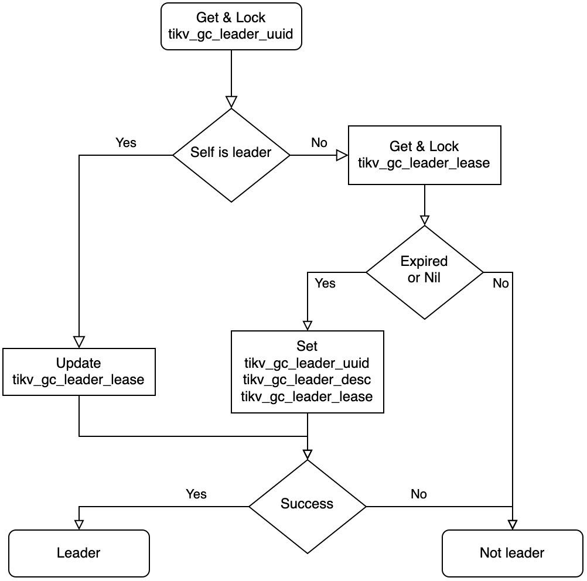

MVCC Garbage Collection
TiDB is a database built on TiKV, a multi-version storage engine which supports Snapshot Isolation(SI) based on the MultiVersion Concurrency Control (MVCC). Semantically, a multi-version system keeps multi copies of data. However, in the long-term running, there will be many garbage data that takes up a lot of disk space as well as has an impact on performance. A GC is responsible for cleaning up unused data and free the space while minimizing the impact on the system. This document talks about how MVCC GC works and implements in TiDB.
This document refers to the code of TiDB v5.2.1, PD v5.2.1, and TiKV v5.2.1.
TiDB part
You probably already know that data is stored in TiKV instances in a TiDB cluster. However, the GC process should be triggered by TiDB because it's the coordinator of the cluster. There are several requirements for TiDB when triggering GC.
- Clean up as much garbage data as possible.
- Any data that is possibly read by opened transactions should be kept.
- GC should not be frequently triggered.
There is an inner table named mysql.tidb in TiDB which stores many runtime information. Actually, these variables are stored in TiKV as common KV variables. We'll talk about the usage of these variables in the GC workflow later.
MySQL [test]> select * from mysql.tidb where variable_name like "tikv_gc_%";
+--------------------------+----------------------------------------------------------------------------------------+---------------------------------------------------------------------------------------------+
| VARIABLE_NAME | VARIABLE_VALUE | COMMENT |
+--------------------------+----------------------------------------------------------------------------------------+---------------------------------------------------------------------------------------------+
| tikv_gc_leader_uuid | 5f0c276e9bc0002 | Current GC worker leader UUID. (DO NOT EDIT) |
| tikv_gc_leader_desc | host:xxxxx, pid:95695, start at 2021-09-29 16:13:35.740303321 +0800 CST m=+5.325166809 | Host name and pid of current GC leader. (DO NOT EDIT) |
| tikv_gc_leader_lease | 20210929-17:09:35 +0800 | Current GC worker leader lease. (DO NOT EDIT) |
| tikv_gc_enable | true | Current GC enable status |
| tikv_gc_run_interval | 10m0s | GC run interval, at least 10m, in Go format. |
| tikv_gc_life_time | 10m0s | All versions within life time will not be collected by GC, at least 10m, in Go format. |
| tikv_gc_last_run_time | 20210929-17:03:35 +0800 | The time when last GC starts. (DO NOT EDIT) |
| tikv_gc_safe_point | 20210929-16:53:35 +0800 | All versions after safe point can be accessed. (DO NOT EDIT) |
| tikv_gc_auto_concurrency | true | Let TiDB pick the concurrency automatically. If set false, tikv_gc_concurrency will be used |
| tikv_gc_scan_lock_mode | legacy | Mode of scanning locks, "physical" or "legacy" |
| tikv_gc_mode | distributed | Mode of GC, "central" or "distributed" |
+--------------------------+----------------------------------------------------------------------------------------+---------------------------------------------------------------------------------------------+
11 rows in set (0.003 sec)
GC Worker
GCWorker is the component responsible for triggering GC in TiDB.
// GCWorker periodically triggers GC process on tikv server.
type GCWorker struct {
uuid string
desc string
...
}
In GCWorker structure, uuid field is the unique identifier. When it's initialized, a timestamp is fetched from PD and formatted as a 16-digit hex string, and used as the uuid. desc is a human-readable identifier that is composed of some instance information.
The Start function of GCWorker will be called when TiDB is bootstrapped. In this file, a goroutine will be created for triggering GC jobs periodically.
// Start starts the worker.
func (w *GCWorker) Start() {
var ctx context.Context
ctx, w.cancel = context.WithCancel(context.Background())
var wg sync.WaitGroup
wg.Add(1)
go w.start(ctx, &wg)
wg.Wait() // Wait create session finish in worker, some test code depend on this to avoid race.
}
There is a ticker in GCWorker that will try running the GC task every minute. We'll talk about how it works in the following sections.
GC Leader
In TiDB's design, there is only one GC leader which can trigger GC in the cluster, so there is an election and lease for the proposal of the leader. GCWorker checks if it itself is the leader before starting a real GC job.
func (w *GCWorker) tick(ctx context.Context) {
isLeader, err := w.checkLeader()
...
if isLeader {
err = w.leaderTick(ctx)
...
} else {
// Config metrics should always be updated by leader, set them to 0 when current instance is not leader.
metrics.GCConfigGauge.WithLabelValues(gcRunIntervalKey).Set(0)
metrics.GCConfigGauge.WithLabelValues(gcLifeTimeKey).Set(0)
}
}
Luckily, TiDB is built on a durable and high-available storage layer, which makes the election quite easy by the following mechanism.

This is the flowchart of leader election which is implemented in checkLeader function, if the result is leader, we then trying to tick a GC.
GC Prepare
When a GC workflow is triggered, we are facing another issue - find out the data that can be cleaned up.
Since TiDB follows SI isolation level, all reads performed in a transaction should get the result from the same timestamp, if not so, there will be consistency and repeatable read issues. Besides, we don't want that the garbage data is cleaned up once after it's not used, because recovery is important when misoperations. That means before starting a GC round, there are many checks.
func (w *GCWorker) checkPrepare(ctx context.Context) (bool, uint64, error) {
enable, err := w.checkGCEnable()
...
now, err := w.getOracleTime()
...
ok, err := w.checkGCInterval(now)
...
newSafePoint, newSafePointValue, err := w.calcNewSafePoint(ctx, now)
...
err = w.saveTime(gcLastRunTimeKey, now)
...
err = w.saveTime(gcSafePointKey, *newSafePoint)
...
return true, newSafePointValue, nil
}
GC is enabled by default, but it's allowed to be turned off. In prepare stage, it'll check if GC is enabled first.
In TiDB, there is a variable named tikv_gc_run_interval which controls the frequency of GC. It's the min interval between 2 GC rounds, 10min by default.
Once it's ready to perform a GC round, calcNewSafePoint is called to get a new safepoint, this deals with some long-term opened transactions. We'll talk about how safepoint is decided later.
If a new safepoint is got, we then update the GC checkpoint and new safepoint, here we're ready to start a GC round. It's ok that TiDB collapses after the new GC round is set because it won't break the GC promises, we just skip a round of GC.
GC Safepoint
This is the key problem of GC.
What we desired is the min transaction start timestamp between all TiDB instances. TiDB instances will store their min start timestamp in PD's etcd, so we just fetch all the min transaction start timestamps here. GetWithPrefix will get all KV pairs from the etcd storage.
func (w *GCWorker) calcGlobalMinStartTS(ctx context.Context) (uint64, error) {
kvs, err := w.tikvStore.GetSafePointKV().GetWithPrefix(infosync.ServerMinStartTSPath)
if err != nil {
return 0, err
}
var globalMinStartTS uint64 = math.MaxUint64
for _, v := range kvs {
minStartTS, err := strconv.ParseUint(string(v.Value), 10, 64)
if err != nil {
logutil.Logger(ctx).Warn("parse minStartTS failed", zap.Error(err))
continue
}
if minStartTS < globalMinStartTS {
globalMinStartTS = minStartTS
}
}
return globalMinStartTS, nil
}
TiDB server has the risk of crash, however, if a never-pushed-up min start timestamp is left in the system, GC will never works. To solve this issue, the min start timestamp is set with a lease and if TiDB is offline for a long duration, that min start timestamp will be cleared.
After we get all the min start timestamps from etcd, it's easy to calculate the global min start timestamp. It's easy to know the min start timestamp from a single TiDB instance, and every TiDB instance will report it's min start timestamp to etcd in ReportMinStartTS function every interval.
There is a further situation cannot be handled by calculating the global min start timestamp across all TiDB servers, some tools may require TiDB keep data available for a long time. e.g., when BR is processing backup task, the snapshot should be kept even the specific lifetime has been passed. This is checked when setGCWorkerServiceSafePoint is called.
GC Workflow
Once the safepoint is decided and prepare stage is done, it's ready to start a GC workflow. Generally, there are three steps to do.
- Resolve locks.
- Delete unused ranges.
- GC for every key.
The workflow can be found from GC job function. The main intent of this workflow is to clean up data has more impact on the running tasks earlier.
In resolve locks phase, GC will clean up the locks of aborted transaction and commit the locks of success transaction. GCWorker scans the locks from every store and call BatchResolveLocks for cleaning up, you may read lock resolver chapter for more information about locks.
There are two modes when scanning locks, legacy mode and physical mode. Currently, only legacy mode is stable. The physical mode(a.k.a., Green GC) is introduced in TiDB 4.0, however not GA yet. When it is available, it's possible to scan locks by physical mode which bypasses the Raft layer and scan the locks directly. The resolveLocks function will use legacy mode as a fallback even if physical mode is set.
func (w *GCWorker) resolveLocks(ctx context.Context, safePoint uint64, concurrency int, usePhysical bool) (bool, error) {
if !usePhysical {
return false, w.legacyResolveLocks(ctx, safePoint, concurrency)
}
// First try resolve locks with physical scan
err := w.resolveLocksPhysical(ctx, safePoint)
if err == nil {
return true, nil
}
...
return false, w.legacyResolveLocks(ctx, safePoint, concurrency)
}
The GCWorker then cleans up unused ranges, which are caused by drop table or drop index statements. When executing the drop statements in TiDB, TiDB only marks some ranges to be deleted and returns success. These to-be-deleted ranges are actually cleaned up in GC.
MySQL [test]> create table t(id int primary key, v int, key k(v));
Query OK, 0 rows affected (0.109 sec)
MySQL [test]> insert into t values(1,1),(2,2),(3,3);
Query OK, 3 rows affected (0.004 sec)
Records: 3 Duplicates: 0 Warnings: 0
MySQL [test]> alter table t drop index k;
Query OK, 0 rows affected (0.274 sec)
MySQL [test]> SELECT HIGH_PRIORITY job_id, element_id, start_key, end_key FROM mysql.gc_delete_range;
+--------+------------+----------------------------------------+----------------------------------------+
| job_id | element_id | start_key | end_key |
+--------+------------+----------------------------------------+----------------------------------------+
| 58 | 1 | 7480000000000000385f698000000000000001 | 7480000000000000385f698000000000000002 |
+--------+------------+----------------------------------------+----------------------------------------+
1 row in set (0.002 sec)
MySQL [test]> SELECT HIGH_PRIORITY job_id, element_id, start_key, end_key FROM mysql.gc_delete_range_done WHERE 1;
+--------+------------+--------------------+--------------------+
| job_id | element_id | start_key | end_key |
+--------+------------+--------------------+--------------------+
| 55 | 53 | 748000000000000035 | 748000000000000036 |
+--------+------------+--------------------+--------------------+
1 row in set (0.002 sec)
The to-be-deleted ranges are stored in mysql.gc_delete_range. They will be deleted in deleteRanges in GC. After they are cleaned up, they will be moved into mysql.gc_delete_range_done, and double-checked after 24 hours.
Finally, the GCWorker is going to clean up the stale keys. From TiDB 5.0, only distributed mode is supported, this document will talk about distributed mode below.
Distributed GC is implemented by pushing up the safepoint in PD. Notice that the safepoint is monotonic. PD guarantees this by comparing the old and new values here.
// UpdateGCSafePoint implements gRPC PDServer.
func (s *Server) UpdateGCSafePoint(ctx context.Context, request *pdpb.UpdateGCSafePointRequest) (*pdpb.UpdateGCSafePointResponse, error) {
...
newSafePoint := request.SafePoint
// Only save the safe point if it's greater than the previous one
if newSafePoint > oldSafePoint {
if err := s.storage.SaveGCSafePoint(newSafePoint); err != nil {
return nil, err
}
log.Info("updated gc safe point",
zap.Uint64("safe-point", newSafePoint))
} else if newSafePoint < oldSafePoint {
log.Warn("trying to update gc safe point",
zap.Uint64("old-safe-point", oldSafePoint),
zap.Uint64("new-safe-point", newSafePoint))
newSafePoint = oldSafePoint
}
return &pdpb.UpdateGCSafePointResponse{
Header: s.header(),
NewSafePoint: newSafePoint,
}, nil
}
If PD returns the same new safepoint as TiDB provides, TiDB takes this GC round success.
Distributed GC on TiKV
As we talked above, TiDB only pushes up the safepoint in PD instead of cleaning up keys directly. Every TiKV has an inner GcManager with safe_point field.
#![allow(unused)] fn main() { pub(super) struct GcManager<S: GcSafePointProvider, R: RegionInfoProvider, E: KvEngine> { cfg: AutoGcConfig<S, R>, /// The current safe point. `GcManager` will try to update it periodically. When `safe_point` is /// updated, `GCManager` will start to do GC on all regions. safe_point: Arc<AtomicU64>, safe_point_last_check_time: Instant, /// Used to schedule `GcTask`s. worker_scheduler: Scheduler<GcTask<E>>, /// Holds the running status. It will tell us if `GcManager` should stop working and exit. gc_manager_ctx: GcManagerContext, cfg_tracker: GcWorkerConfigManager, feature_gate: FeatureGate, } }
By default, TiKV tries to pull safepoint from PD every 10 seconds. If the pulled safepoint is greater than the local one, the local one will be pushed up, and meanwhile, a GC job is trigger in TiKV locally.
Summary
This document talked about how MVCC GC worked in TiDB system. The most basic requirement of GC is not to delete readable data. Due to the guarantee of GC, you don't need to care about that data is removed. The green GC, skips fetch snapshot when read locks, help to improve the performance of GC. There are some further performance-related topics of GC in TiKV which will be talked in TiKV Dev Guide.